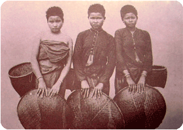

วิถีชีวิต : ชนเผ่าไทอีสาน

ประวัติความเป็นมา : ไทยอีสาน เป็นประชากรกลุ่มใหญ่ พูดภาษาไทย-ลาว ภาษาอีสาน เป็นกลุ่มผู้นำทางด้านวัฒนธรรมภาคอีสาน เช่น ฮีต คอง ตำนาน อักษรศาสตร์ จารีตประเพณี
นิยมตั้งหมู่บ้านเป็นกลุ่ม บนที่ดอนเรียกตามภาษาท้องถิ่นว่า "โนน" ยึดทำเลการทำนาเป็นสำคัญ อาศัยอยู่ทั่วไป
เรื่องถิ่นเดิมของชาติพันธุ์ลาวมีแนวคิด 2 อย่าง ซึ่งก็มีเหตุผลสนับสนุนพอ ๆ กันคือ
1.ถิ่นเดิมของลาวอยู่ที่อีสานนี่เอง ไม่ได้อพยพมาจากไหน ถ้าเหมาว่าคนบ้านเชียงคือลาว ก็แสดงว่าลาวมาตั้งหลักแหล่งที่บ้านเชียงมากกว่า 5,600 ปีมาแล้ว เพราะอายุหม้อบ้านเชียงที่พิสูจน์โดยวิธีคาร์บอน 14
บอกว่าหม้อบ้านเชียงอายุเก่าแก่ถึง 5,600 ปี กว่าคนบ้านเชียงจะเริ่มตีหม้อใช้ในครัวเรือน ก็ต้องสร้างบ้านเรือนอยู่อาศัยก่อนหน้านั้นแล้ว แนวความคิดนี้ยังบอกอีกว่านอกจากลาวจะอยู่อีสานแล้ว ยังกระจายไปอยู่ที่อื่นอีก
เช่น เวียดนาม จีน ญี่ปุ่น ยุโรป แล้วข้ามไปอเมริกาเป็นพวกอินเดียนแดง
2. ถิ่นเดิมของลาวอยู่ที่อีสานและมีมาจากที่อื่นด้วย แนวคิดนี้เชื่อว่า คนอีสานน่าจะมีอยู่แล้วในดินแดนที่เรียกว่า “อีสาน” หรือส่วนหนึ่งของสุวรรณภูมิ โดยประมาณ 10,000 ปีที่ผ่านมา นักมานุษยวิทยา และนักประวัติศาสตร์ได้สันนิษฐานว่าได้มีการอพยพของพวกละว้า หรือข่าลงมาอยู่ในแดนสุวรรณภูมินับเป็นคนพวกแรกที่เข้ามา พอเข้ามาอยู่สุวรรณภูมิก็แบ่งเป็นอาณาจักรใหญ่ ๆ 3 อาณาจักร คือ อาณาจักรทวารวดี ซึ่งมีนครปฐมเป็นราชธานี มีอาณาเขตถึงเมืองละโว้(ลพบุรี) อาณาจักรที่สองคือโยนก เมืองหลวงได้แก่เมืองเงินยาง หรือเชียงแสน มีเขตแดนขึ้นไปถึงเมืองชะเลียงและเมืองเขิน อาณาจักรที่สามคือโคตรบูร ได้แก่บรรดาชาวข่าที่มาสร้างอาณาจักรในลุ่มน้ำโขง มีเมืองหลวงอยู่ที่เมืองโคตรบูรณ์ ซึ่งอยู่ทางฝั่งซ้ายของแม่น้ำโขงจากแนวคิดที่ 2 จะเห็นว่าในคำรวมที่นักมานุษยวิทยา และ นักประวัติศาสตร์เรียกว่า “คนอีสาน”
นั้นน่าจะมีคนหลายกลุ่มหลายชาติพันธุ์ปะปนกันอยู่และในหลายกลุ่มนั้นน่าจะมีกลุ่มชาติพันธุ์ ลาว อยู่ด้วย
แหล่งท่องเที่ยวชุมชน และท่องเที่ยวเชิงวัฒนธรรม เยี่ยมชมหมู่บ้านวิถีดั้งเดิม และชมการผลิตดนตรีอีสาน เยี่ยมชมบ้านไทลาวแบบโบราณ
การประกอบอาชีพ ชาวไทยอีสาน ประกอบอาชีพเกษตรกรรมเป็นหลัก นอกจากนั้นยังมีการจับปลาเป็นอาหาร และชาวลาวยังทำอุตสาหกรรมในครัวเรือน
เช่น ปั้นหม้อ สานตะกร้า ทอผ้า เป็นต้น ผู้หญิงลาวจะมีหน้าที่ทอผ้า เลี้ยงสัตว์ ตำข้าว เตรียมอาหาร ทำครัว เพาะปลูกเก็บเกี่ยว ส่วนผู้ชายจะทำงานหว่านไถนา
ชาวลาวมีการนับถือญาติทั้งสองฝ่าย เมื่อชายหญิงแต่งงานแล้วจะอาศัยอยู่บ้านฝ่ายหญิงระยะหนึ่ง
หลังจากนั้นจะย้ายออกไปตั้งเรือนใหม่ ลูกสาวมักได้รับมรดกจากพ่อแม่ และมักจะอาศัยอยู่กับพ่อแม่ของตนหลังจากแต่งงาน